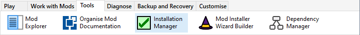
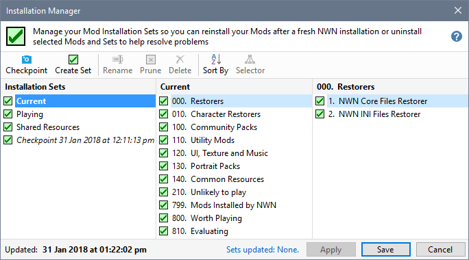

The Installation Manager displays a list of all the Mods you have installed in your current Profile and allows you to select mods you want to uninstall or reinstall from a Mod Installation Set, which defines a selection of the mods you had installed. This allows you to restore your mod installations after troubleshooting or reinstalling your Neverwinter Nights game.

Create Checkpoints
Create Mod Installation Sets
Work with Installation Sets
When do I need to use the Installation Manager
- If you are having problems with an individual mod, you can use the Installation Manager to uninstall all the other mods so you can establish whether the issues are a result of some conflict. Once you have resolved the problem (or finished playing the mod), you can reinstate the mods you uninstalled.
- Use the Installation Manager to restore all your installed mods after you have removed and reinstalled the Neverwinter Nights game.
- Maintain a number of different mod combinations that you want to be able to install or uninstall easily.
Related Topics
Glossary